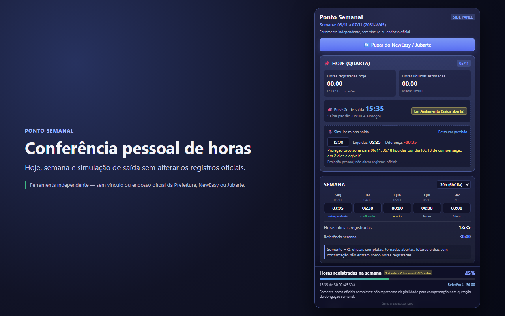
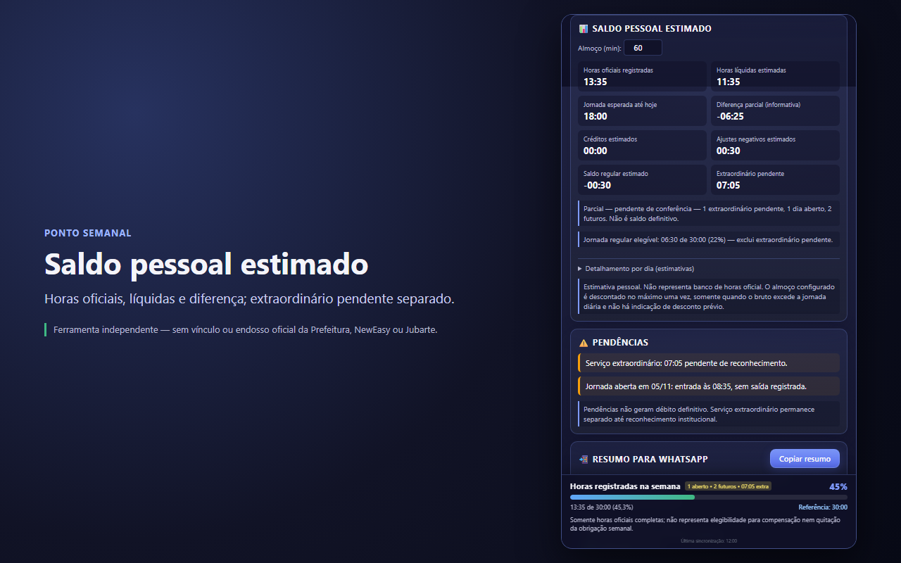
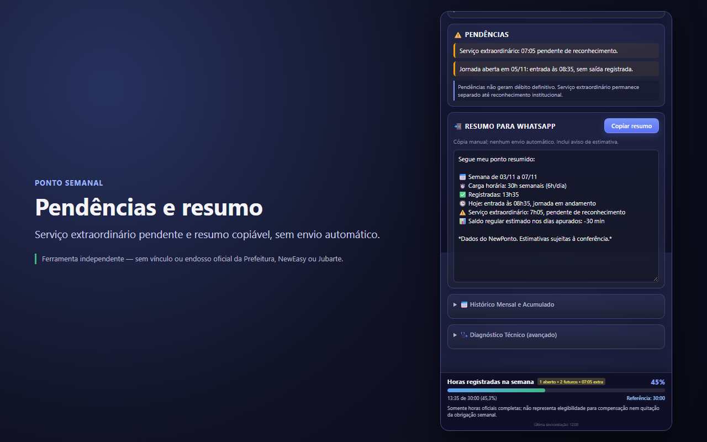

Ponto Semanal 1.4.1
Como instalar e usar
Guia passo a passo para instalar a extensão, importar seus registros e entender os números do painel.
Em preparação para disponibilização na Chrome Web Store. As etapas de instalação pela loja passam a valer quando a extensão for publicada. O link oficial será divulgado nesta página; não há link de instalação disponível antes disso.
1. Instalar a extensão
A instalação será feita pela Chrome Web Store, como qualquer outra extensão do Chrome. Não é necessário ativar o modo desenvolvedor.
- Atualize o Chrome para a versão 116 ou mais recente. O painel lateral usado pela extensão depende dessa versão.
- Abra o link da Chrome Web Store que será divulgado nesta página quando a extensão estiver disponível.
- Clique em Usar no Chrome ou Adicionar ao Chrome e confirme a instalação.
- Fixe o ícone de relógio na barra: clique no ícone de peças (extensões), encontre Ponto Semanal e clique no alfinete.
Enquanto a extensão não estiver publicada, não existe link de instalação. Não instale cópias de origem desconhecida.
2. Abrir o painel lateral
- Clique no ícone de relógio do Ponto Semanal na barra do Chrome.
- O painel abre na área lateral do Chrome.
- Se ele não abrir, veja Problemas comuns.
3. Entrar no portal e importar os registros
A extensão não cria conta e não pede sua senha. Você continua entrando normalmente no portal do ponto.
- Abra o NewEasy/NewPonto ou o Jubarte em uma aba do Chrome.
- Faça login normalmente e deixe a página do espelho de ponto aberta.
- No painel, na primeira utilização, leia o aviso Antes de usar e clique em Li e entendo.
- Clique em Puxar do NewEasy / Jubarte. A extensão lê somente o espelho exibido na aba autorizada e guarda o resultado localmente.
- Aguarde a mensagem de sincronização. As horas oficiais aparecem nos cartões Hoje e Semana.
Importar o mês
Abra Histórico Mensal e Acumulado e use Puxar mês do NewPonto quando o portal estiver exibindo o mês desejado. Depois, use o seletor para consultar os meses que já foram importados.
A importação mensal está disponível para o NewPonto. No Jubarte, use a sincronização semanal.
O botão importa o mês que está aparecendo no portal. O seletor do painel serve para consultar meses que já foram importados.
4. Entender os números
- Horas oficiais registradas: total de HRS completas que vieram do espelho de ponto.
- Horas líquidas estimadas: horas oficiais com o intervalo de almoço estimado, quando aplicável. É uma estimativa pessoal.
- Progresso: proporção de horas oficiais completas em relação à jornada escolhida (30h ou 40h). Não significa elegibilidade para compensação nem quitação da obrigação semanal.
- Saldo regular estimado: diferença pessoal nos dias já apurados. Não é banco de horas oficial.
- Extraordinário pendente: horas que aguardam reconhecimento. Elas não são aprovadas automaticamente.
- Aberto, futuro ou não verificado: não geram débito definitivo. Use o espelho oficial para conferir.


5. Simular a saída
No cartão Hoje, use o campo Simular minha saída para testar um horário antes de sair.
- Digite a saída no formato HH:MM.
- Confira as horas líquidas simuladas e a diferença em relação à meta diária.
- Se houver diferença negativa, o painel mostra uma projeção para o próximo dia útil elegível.
- Use Restaurar previsão para voltar à sugestão padrão.
A simulação é pessoal e não altera os registros oficiais. A saída oficial só prevalece quando o portal registra a batida.


6. Copiar o resumo para WhatsApp
No cartão Resumo para WhatsApp, confira o texto curto e clique em Copiar resumo.
Depois, cole o texto no WhatsApp ou em outro aplicativo, se quiser. A extensão não envia mensagens automaticamente.
O resumo mostra horas oficiais, jornada, pendências e saldo regular estimado. Serviço extraordinário aparece como pendente de reconhecimento.


7. Problemas comuns
O painel não abre
- Confirme se o Chrome está atualizado (versão 116 ou mais recente).
- Confirme se o Ponto Semanal está instalado e ativado em
chrome://extensions. - Fixe o ícone de relógio na barra e clique nele para abrir o painel lateral.
- Recarregue a aba do portal e tente novamente.
- Se a extensão ainda não estiver publicada, aguarde o link oficial nesta página.
Os registros não aparecem
- Confirme se você está logado no portal e na página do espelho de ponto.
- Confirme se a semana ou o mês desejado está selecionado no portal.
- Aceite o aviso de privacidade, se ele estiver visível, e clique em Puxar do NewEasy / Jubarte.
- Recarregue a página do portal e tente novamente.
- Um dia sem registro não é automaticamente uma falta. O painel deve mostrar a pendência para conferência.
A sessão expirou
- Volte ao portal e faça login novamente.
- Recarregue a página e clique em sincronizar no painel.
- A extensão nunca pede sua senha e não acessa cookies ou tokens.
A jornada está aberta
- Quando existe entrada e ainda não há saída, o painel mostra aberto ou em andamento.
- Não há horas oficiais definitivas enquanto a saída não for registrada.
- A simulação de saída é apenas uma estimativa pessoal.
- Confira o espelho oficial para registrar ou corrigir a batida conforme o procedimento do órgão.
O mês aparece incompleto
- Importe o mês com a página do portal exibindo esse mês.
- Dias sem registro importado aparecem como cobertura parcial, não como falta.
- Se precisar de ajuda, use o contato de suporte.
8. Remover a extensão e apagar os dados locais
- Abra
chrome://extensions. - Encontre Ponto Semanal.
- Clique em Remover e confirme.
Os registros, históricos, configurações e simulações ficam no armazenamento local do Chrome. Ao remover a extensão, esse armazenamento local é apagado. Não existe cópia em servidor do desenvolvedor.
Se a opção de limpar dados da extensão estiver disponível na sua versão do Chrome, ela também remove o armazenamento local.
A extensão não substitui o espelho de ponto nem a conferência institucional. Guarde os comprovantes oficiais conforme as regras do órgão.
Privacidade e suporte
Leia a Política de Privacidade para saber quais dados são tratados, como ficam armazenados e como apagá-los.
Dúvidas, problemas ou solicitações: canal público do projeto no GitHub.
O Ponto Semanal é uma ferramenta independente. Não é sistema oficial de ponto e não possui vínculo, endosso, autorização ou representação da Prefeitura de Rio das Ostras, do NewEasy ou do Jubarte.